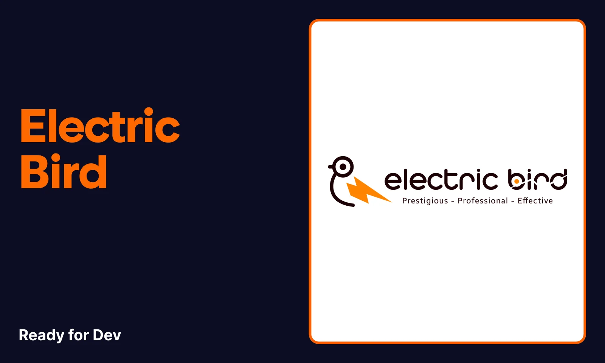
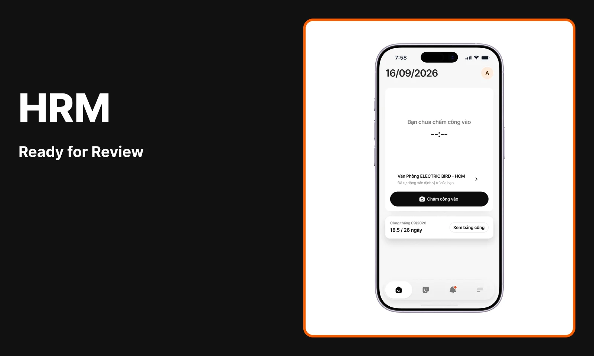
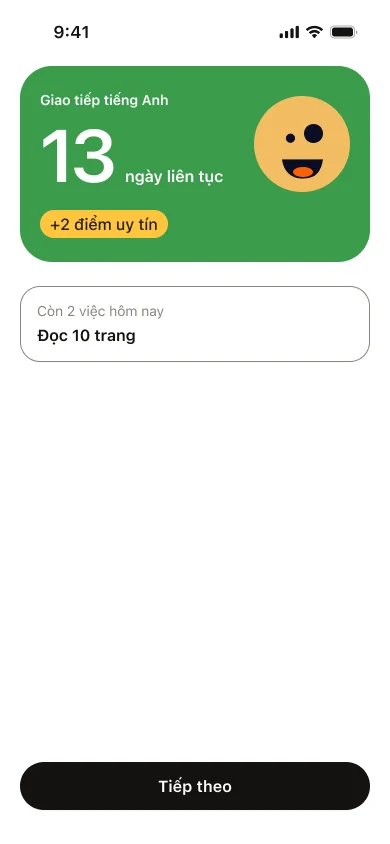
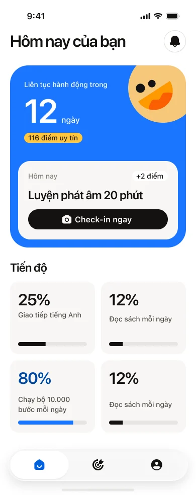

Dự án | 2 sản phẩm B2B đã phát hành và 1 case study cá nhân

01 | Đã phát hành
ElectricBird
Từ báo cáo, gọi điện và tin nhắn Zalo đến một dashboard theo thời gian thực cho PM và chủ đầu tư.

02 | Đã phát hành
HRM
Thay FastCons và Excel bằng hệ thống sát với quy trình thật của công ty, rồi chuyển file 18.000 layer sang design system mới cùng Claude.



03 | Case study cá nhân
BlueChain
Đi trọn quy trình: phỏng vấn, insight, How Might We, user flow, IA và 62 màn hình mobile.
Khám phá
Hiểu bài toán
Đọc tài liệu nghiệp vụ, họp và phỏng vấn 1:1 người dùng, xem họ đang làm bằng công cụ gì.
Xác định
Chốt phạm vi
Cùng PM chốt sản phẩm xoay quanh việc gì, chức năng chính nào, cái gì để lại cho hệ thống khác.
Phát triển
Thiết kế và điều chỉnh
User flow, wireframe, UI đầy đủ trạng thái và edge case. Dùng Claude cho phần lặp lại.
Bàn giao
Bàn giao và kiểm tra
Design system, file Ready for Dev có chú thích, review bản build hàng tuần cùng PM và dev.
Mỗi dự án đi qua 4 bước Double Diamond. Chưa có số liệu sau ra mắt, nên mỗi case nêu chỉ số tôi đề xuất và cách đo, không phải kết quả.